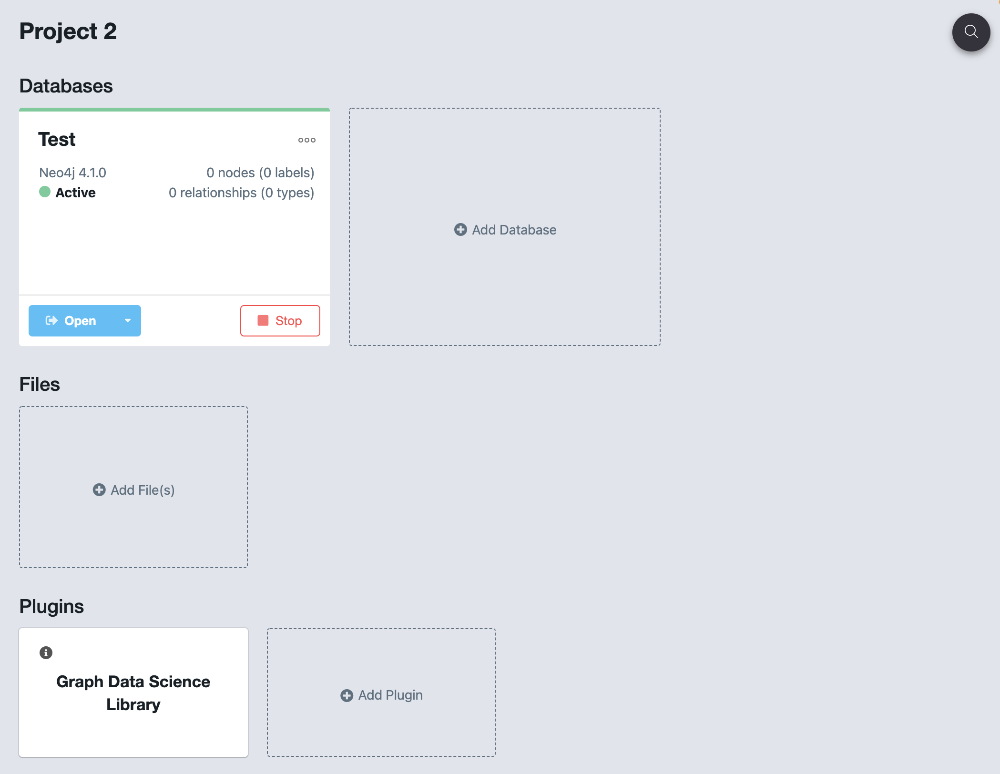
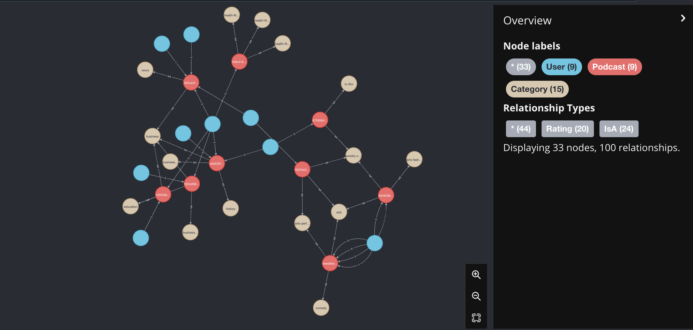

PodcastRecommendation
0.1.4
Podcast Recommendation Algorithm
Instalar
python3 -m pip install podcast-recommendation
pip install podcast-recommendation
pip install podcast-recommendation==0.1.4
Uso
Import
from podcast_recommendation.algorithm import PodcastRecommendation
Crear objeto
Para utilizarlo debe tener una DataBase abierta en Neo4j con el plugin de Data Science 
pr = PodcastRecommendation('bolt://localhost:7687', ('neo4j', 'password'), verbose=True)
Reading x_train
Reading y_train
Training model
Training complete
Generar grafo
pr.build_graph(verbose=True)
Reading categories
Reading ratings
Creating categories, categories and IsA
Creating users, categories and ratings
Build complete
Se genera un grafo como el siguiente: 
Generar recomendaciones
Para recomendar podcast al usuario 6C561484AED5C02
pr.recommend(user_id='6C561484AED5C02')
podcast_id proba
47 b4c3c3ebdd76e284f7d9fa358ac82030 0.999225
31 c9add5e9e81a4b3ca963adab5b87083f 0.999216
30 a37fb116709bfdb2dd58ea4f784cb815 0.999042
42 a3a535f66c7e8004e7dc54c2b2829a9e 0.999038
43 b70d658c901897359bb848cf876cbcbc 0.998779
...
Eliminar el grafo
pr.delete_all()
Eliminar rating
Eliminar rating entre usuario 6C561484AED5C02 y podcast a3a535f66c7e8004e7dc54c2b2829a9e
pr.delete_rtg(user_id='6C561484AED5C02', podcast_id='a3a535f66c7e8004e7dc54c2b2829a9e')
Crear rating
Crear rating de 5 entre usuario 6C561484AED5C02 y podcast a3a535f66c7e8004e7dc54c2b2829a9e
pr.create_rtg(user_id='6C561484AED5C02', podcast_id='a3a535f66c7e8004e7dc54c2b2829a9e', rating=5)
Crear usuario
Crear usuario de id A1A1A1A1A1A1A1
pr.create_user(user_id='A1A1A1A1A1A1A1')
Crear podcast
Crear podcast de id a1a1a1a1a1a1a1a1a1a1a1
pr.create_podcast(podcast_id='a1a1a1a1a1a1a1a1a1a1a1')
Crear categoria
Crear categoria de nombre cat e id 99
pr.create_category(category='cat', category_id=99)
Crear relación IsA
Crear relación podcast de id a1a1a1a1a1a1a1a1a1a1a1 IsA categoria de nombre cat
pr.create_IsA(podcast_id='a1a1a1a1a1a1a1a1a1a1a1', category='cat')
Cerrar driver
pr.close()